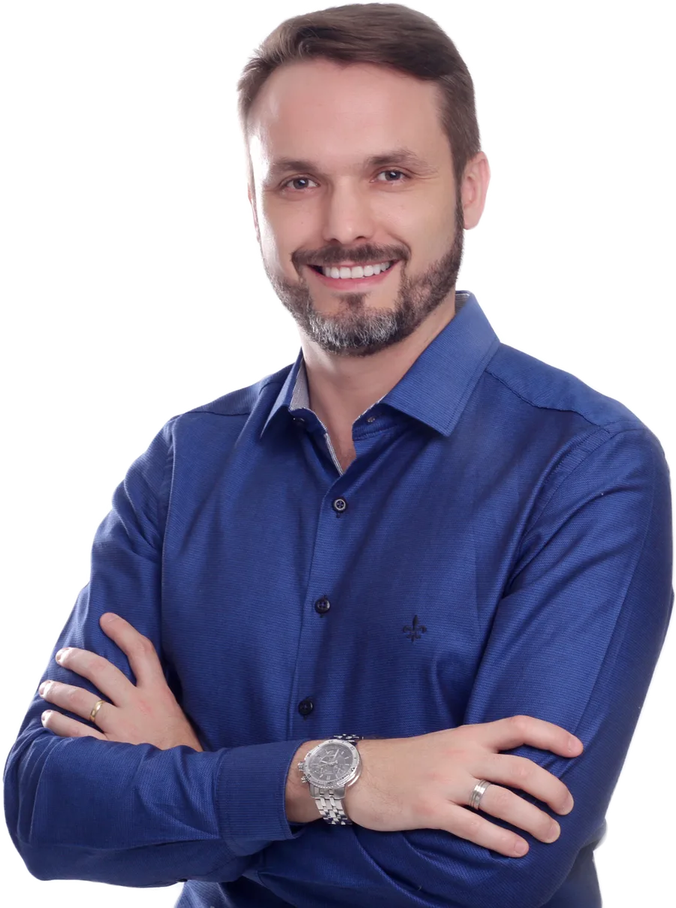

No consultório
Alameda Rio Branco, 453
Piso superior, Jardim
Blumenau, SC
Atendimento presencial para Blumenau e região, com todas as abordagens.
Como chegarPsicoterapia com Carlos Mozarth para adolescentes e adultos, em Blumenau e on-line.
Escolha o que mais se parece com o seu momento. A gente mostra qual caminho costuma ajudar e você já chama o Carlos com a mensagem pronta.
Em vez de olhar só para o problema, a Psicoterapia Positiva trabalha a parte saudável de quem chega e fortalece seus recursos psicológicos. É uma abordagem pesquisada justamente em ansiedade, crises de pânico e depressão.
Abre o WhatsApp com a mensagem já escrita. Você só envia.
Desde 2005, o Carlos reúne formações da psicologia, da neurociência e do desenvolvimento humano. Na prática, o cuidado é montado em volta de você, e não você encaixado numa técnica.
Cuidar da mente não é só consertar o que dói. É despertar o que já existe em você.
A base da Psicologia Positiva, que guia o trabalho na Aion.
Mais de duas décadas de clínica atendendo adolescentes e adultos. Ao longo desse caminho, o Carlos foi buscando o que existe de mais atual para ir além da conversa: Psicologia e Psicoterapia Positiva, EMDR, Neuromodulação ETCC, Biofeedback, Neurofeedback e várias formações em Coaching.
O que une tudo isso é uma convicção: autoconhecimento e autodesenvolvimento são a base. Quem chega à Aion encontra escuta, método e um plano para sair do lugar.
Não sou de comentar, mas ontem a sessão foi muito boa. Estou até agora refletindo sobre todos os pontos que avaliamos.
Fui muito bem atendida, ele foi acolhedor, atencioso e me deixou à vontade para falar sobre o que estava sentindo. Me senti ouvida e compreendida, e saí da sessão mais leve.
Atencioso, atende sem ansiedade e deixa bem à vontade para expor o que o paciente está sentindo no momento. Sendo que foi minha primeira consulta.
Um excelente profissional, muito atencioso e educado, faz você se sentir bem e confortável durante a consulta.
Ótimo profissional, técnica aplicada muito eficiente.
Conte em poucas palavras o que você está vivendo. Não precisa saber o nome do que sente.
No consultório, no bairro Jardim, em Blumenau, ou por vídeo, de onde você estiver.
Vocês entendem juntos o seu momento e definem a abordagem, o ritmo e onde você quer chegar.
O que a gente adia não some. Só ocupa mais espaço. Você não precisa esperar piorar para pedir ajuda.
Dar o primeiro passoAlameda Rio Branco, 453
Piso superior, Jardim
Blumenau, SC
Atendimento presencial para Blumenau e região, com todas as abordagens.
Como chegarSessões por vídeo para quem mora em outras cidades, outros estados e até fora do Brasil. A mesma escuta, sem trânsito e sem sala de espera.
Agendar on-lineFicou alguma dúvida? Pergunte pelo WhatsApp, sem compromisso.
Sim. O Carlos atende adolescentes e adultos. Com adolescentes, o primeiro contato costuma ser feito pelos pais ou responsáveis, pelo WhatsApp.
Não. A EMDR trabalha as memórias difíceis sem exigir que você descreva cada situação em voz alta. Isso faz diferença para quem não consegue, ou não quer, reviver tudo falando.
Não. A ETCC usa correntes elétricas leves, aplicadas no couro cabeludo, e é indolor. A indicação é avaliada com você antes, na consulta.
A psicoterapia cuida da saúde emocional: ansiedade, depressão, traumas e o que mais estiver pesando. O coaching é voltado ao desenvolvimento profissional: clareza de objetivos, performance e estratégia de carreira.
Funciona, e o Carlos atende assim pacientes de outros estados e de outros países. Você só precisa de um lugar reservado e de uma boa conexão. As técnicas que usam equipamento são combinadas na consulta.
Valores, horários disponíveis e formas de pagamento são informados pelo WhatsApp. É só mandar uma mensagem.
Conte ao Carlos o que você está vivendo. Presencial em Blumenau ou on-line, para adolescentes e adultos.